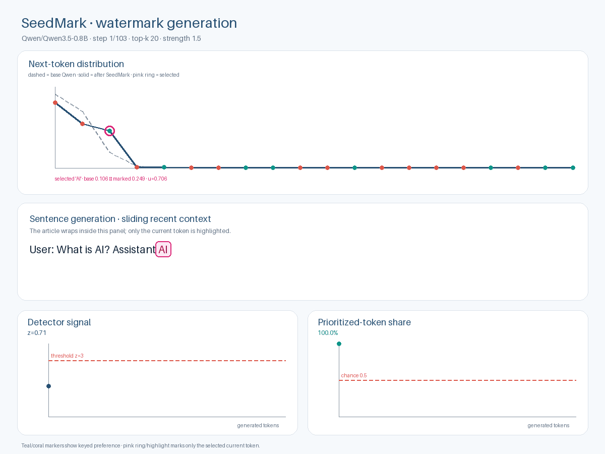

Watermarked output
Keyed sampling nudge enabled
Expected to accumulate positive keyed correlation.
z-score4.13
1−p100.00%
Priority share64.1%
Threshold3
The same Qwen chat request is answered with and without SeedMark. The same detector scores both sequences using token IDs, the first-word seed and the secret key—not Qwen logits.
Expected to accumulate positive keyed correlation.
Matched run with no keyed probability nudge.
Qwen receives this as a real user message. The system instruction requests a short plain-language article; SeedMark is applied only while the assistant answer is generated.
You are a helpful assistant. Answer the user's question directly as a short plain-language article. Explain what AI is, where it is used, its main benefits, its main risks, and end with a brief conclusion. Do not expose chain-of-thought, analysis tags, or internal reasoning.
The sentence uses a sliding recent-context window so a long article wraps cleanly and never overlaps. Only the token appended on the current frame is highlighted in pink.

The solid line is the watermarked z-curve, the dashed line is the control z-curve, and the red dashed line is the decision threshold. The lower cards show one-sided confidence (1−p) and prioritized-token share.
AI stands for Artificial Intelligence, but it is actually Artificial **General Intelligence** (AGI). While humans make decisions, learn from experience, and solve novel problems, machines can currently only process data or follow written instructions. AI is no longer just a toy or a research tool for researchers and scientists; it is a fundamental tool in modern society, driving everything from automated software and robotics to self-driving cars and voice assistants like Siri or Alexa, and shaping how we work, live, and even interact with the world.
AI stands for Artificial Intelligence, but it is actually AI. It refers to the field where computers learn from data and use that knowledge to solve problems. This includes things like speech patterns, visual recognition, and machine learning. AI is used in many places around the world, from personal finance apps and weather forecasting systems to autonomous vehicles in airports and robots in manufacturing. Its main benefit is that it can learn from data to improve over time and make decisions that humans might not be able to. However, there are also risks. These include the potential for human overconfidence in machines, privacy concerns, and ethical issues around job replacements and data
{kind=link}